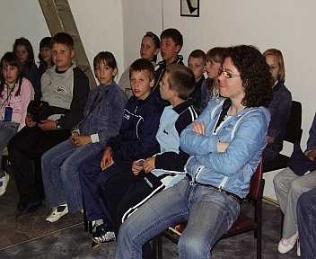
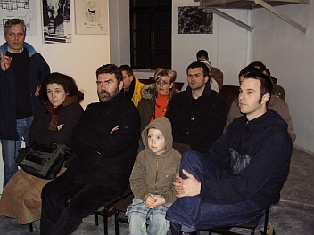
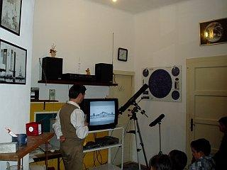

Visit Pula Observatory
Information for visitors and groups
In order for the Astronomical Society "Istra" to successfully conduct its core activity, the popularization of astronomy and related sciences, visits by interested individuals and groups are organized at Pula Observatory.
Contact for appointments
Visitors can announce and arrange a visit via GSM: +385 91 214 1966, or via e-mail adippula@gmail.com
Depending on the age of the visitors, the visit includes a general multimedia lecture about the universe, the history of Pula Observatory, current activities, and telescope observation (depending on weather conditions and objects visible at that moment).



